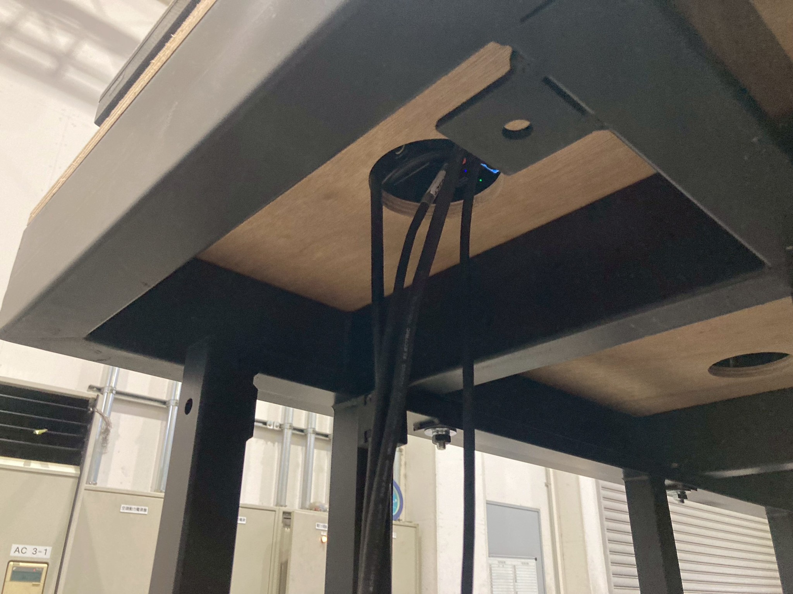

964枚CLF5.2M2 TypeA
25基床LEDを組んだリフター
4 × 6リフター1基あたりの枚数
THE STORY
この現場で、何をしたか。
画面の構成
屋内アリーナの公演で、CLF5.2M2 TypeAを964枚使用しました。25基のリフターには1基あたり横4枚×縦6枚を組み、花道にも床LEDを設置しました。
リフターの仕込み
リフターの待機場所で床LEDを仕込み、ケーブルをまとめてからステージへ移動しました。映像制御にはZ8プロセッサーを使用しました。
花道の設営
花道部分は基礎が完成した後、中央を基準に床LEDを組みました。配線を処理し、不具合の確認とパネルの交換を進めました。
撤去と搬出
花道側からパネルを回収。リフターの台下ケーブルを回収した後、待機場所でリフター分の床LEDを取り外して搬出しました。
- CLF5.2M2 TypeA
- Z8プロセッサー

YOUR NEXT SHOW
次の現場を、
一緒に具体化する。
すべてが決まっていなくても大丈夫です。
分かっていることから、お聞かせください。
相談のときに分かるとよいこと
会場の種類・画面の構成・使用する機材・設営と撤去の時間・担当してほしい工程をお知らせください。
この事例をLOTUS VISUALに相談する↗この事例名を引き継いで、内容を整理できます。